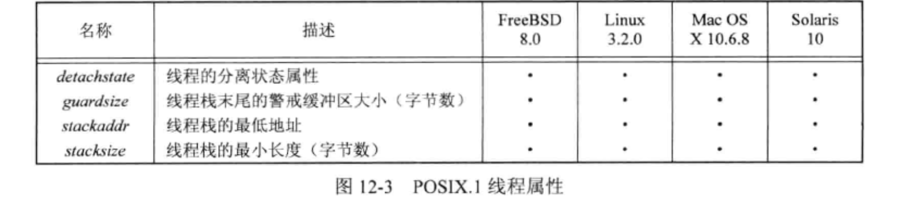
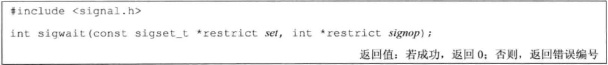

线程限制
线程属性
pthread_attr_destroy() 可以逆初始化 pthread_attr_init() 。
线程属性：

每个属性都有一个获取属性值和设置属性值的 get / set 方法。这里以 detachstate 属性为例：
detachstate 参数值域如下。具体取值取决于给定 pthread_attr_t 结构中的属性值。
PTHREAD_CREATE_DETACHED
PTHREAD_CREATE_JOINABLE
1 2 3 4 5 6 7 8 9 10 11 12 13 14 15 16 17 18 19 #include "apue.h" #include <pthread.h> int makethread (void *(*fn)(void *), void *arg) { int err; pthread_t tid; pthread_attr_t attr; err = pthread_attr_init(&attr); if (err != 0 ) return (err); err = pthread_attr_setdetachstate(&attr, PTHREAD_CREATE_DETACHED); if (err == 0 ) err = pthread_create(&tid, &attr, fn, arg); pthread_attr_destroy(&attr); return (err); }
对线程属性结构清理的唯一接口是 pthread_attr_destroy() ，若 pthread_attr_destroy 函数调用失败，将很难清理线程属性结构。若 pthread_attr_init 函数已经分配内存，可能造成内存泄漏。
线程栈属性
编译阶段可以使用 _POSIX_THREAD_ATTR_STACKADDR 或 _POSIX_THREAD_ATTR_STACKSIZE 检测系统是否支持每个线程栈属性。
运行阶段使用 sysconf 函数测试 _SC_THREAD_ATTR_STACKADDR 或 _SC_THREAD_ATTR_STACKSIZE
对于进程来说，虚地址空间的大小是固定的。多个线程共用进程的虚地址空间。因此，当线程调用的函数嵌套很深，则需要的栈大小就可能比默认的大。当那个线程栈的虚地址空间用尽，可使用 malloc 或 mmap 为可替代的栈分配空间，并用 pthread_attr_setstack 函数来改变新建线程的栈位置。
由 stackaddr 参数指定的地址用作线程栈的内存范围中的最低可寻址地址（并不一定是栈的开始位置，若栈是从高地址向低地址方向增长的，那么 stackaddr 线程属性将是栈的结尾位置）。
函数说明：
参数说明：
stacksize 不能小于 PTHREAD_STACK_MIN。
guardsize 用于说明栈末尾的警戒缓冲大小。常用值是系统页大小的整数倍（通常是 1 倍）。
若线程的栈指针溢出到警戒区域，应用程序可能通过信号接收到出错信息。
若修改了线程属性 stackaddr ，栈警戒缓冲区机制无效（等同于将 guardsize 线程属性设置为 0）。
同步属性 互斥量属性 存储结构：pthread_mutexattr_t 结构。
互斥量属性包含：
进程共享属性（可选）
支持检测：
检测阶段
检测方法
编译阶段
_POSIX_THREAD_PROCESS_SHARED
运行阶段
sysconf(_SC_THREAD_PROCESS_SHARED)
进程共享机制：多个进程共享同一内存区域中的互斥量（需将进程共享互斥量属性设置为 PTHREAD_PROCESS_SHARED）
进程共享互斥量属性的存取
互斥量健壮属性
函数说明：
健壮性属性值域：
PTHREAD_MUTEX_STALLED
PTHREAD_MUTEX_ROBUST
在对互斥量进行解锁时，需调用 pthread_mutex_consistent() 来恢复该锁的一致性，否则不可以直接调用 pthread_mutex_unlock() 且该锁不再可用，且其他试图获取该互斥量的阻塞线程就会得到 ENOTRECOVERABLE 错误码。
类型属性
类型互斥量属性控制着互斥量的锁定特定。POSIX.1 定义了 4 中类型：
函数说明：
递归互斥量的一个应用：使用线程在未来某个时间运行某个函数。
1 2 3 4 5 6 7 8 9 10 11 12 13 14 15 16 17 18 19 20 21 22 23 24 25 26 27 28 29 30 31 32 33 34 35 36 37 38 39 40 41 42 43 44 45 46 47 48 49 50 51 52 53 54 55 56 57 58 59 60 61 62 63 64 65 66 67 68 69 70 71 72 73 74 75 76 77 78 79 80 81 82 83 84 85 86 87 88 89 90 91 92 93 94 95 96 97 98 99 100 101 102 103 104 105 106 107 108 109 110 111 112 113 114 115 116 117 118 119 120 121 122 123 124 125 126 127 128 129 130 131 132 133 134 135 136 137 138 139 140 141 142 143 144 145 146 147 148 149 150 151 152 153 154 155 156 #include "apue.h" #include <pthread.h> #include <time.h> #include <sys/time.h> int makethread (void *(*fn)(void *), void *arg) { int err; pthread_t tid; pthread_attr_t attr; err = pthread_attr_init(&attr); if (err != 0 ) return (err); err = pthread_attr_setdetachstate(&attr, PTHREAD_CREATE_DETACHED); if (err == 0 ) err = pthread_create(&tid, &attr, fn, arg); pthread_attr_destroy(&attr); return (err); } struct to_info { void (*to_fn)(void *); void *to_arg; struct timespec to_wait ; }; #define SECTONSEC 1000000000 #if !defined(CLOCK_REALTIME) || defined(BSD) #define clock_nanosleep(ID, FL, REQ, REM) nanosleep((REQ), (REM)) #endif #ifndef CLOCK_REALTIME #define CLOCK_REALTIME 0 #define USECTONSEC 1000 void clock_gettime (int id, struct timespec *tsp) { struct timeval tv ; gettimeofday(&tv, NULL ); tsp->tv_sec = tv.tv_sec; tsp->tv_nsec = tv.tv_usec * USECTONSEC; } #endif void *timeout_helper (void *arg) { struct to_info *tip ; tip = (struct to_info *)arg; clock_nanosleep(CLOCK_REALTIME, 0 , &tip->to_wait, NULL ); (*tip->to_fn)(tip->to_arg); free (arg); return (0 ); } void timeout (const struct timespec *when, void (*func)(void *), void *arg) { struct timespec now ; struct to_info *tip ; int err; clock_gettime(CLOCK_REALTIME, &now); if ((when->tv_sec > now.tv_sec) || (when->tv_sec == now.tv_sec && when->tv_nsec > now.tv_nsec)) { tip = malloc (sizeof (struct to_info)); if (tip != NULL ) { tip->to_fn = func; tip->to_arg = arg; tip->to_wait.tv_sec = when->tv_sec - now.tv_sec; if (when->tv_nsec >= now.tv_nsec) { tip->to_wait.tv_nsec = when->tv_nsec - now.tv_nsec; } else { tip->to_wait.tv_sec--; tip->to_wait.tv_nsec = SECTONSEC - now.tv_nsec + when->tv_nsec; } err = makethread(timeout_helper, (void *)tip); if (err == 0 ) return ; else free (tip); } } (*func)(arg); } pthread_mutexattr_t attr;pthread_mutex_t mutex;void retry (void *arg) { pthread_mutex_lock(&mutex); printf ("function retry executing\n" ); pthread_mutex_unlock(&mutex); } int recursive_lock (void ) { int err, condition = 1 , arg; struct timespec when ; if ((err = pthread_mutexattr_init(&attr)) != 0 ) err_exit(err, "pthread_mutexattr_init failed" ); if ((err = pthread_mutexattr_settype(&attr, PTHREAD_MUTEX_RECURSIVE)) != 0 ) err_exit(err, "can't set recursive type" ); if ((err = pthread_mutex_init(&mutex, &attr)) != 0 ) err_exit(err, "can't create recursive mutex" ); pthread_mutex_lock(&mutex); if (condition) { clock_gettime(CLOCK_REALTIME, &when); when.tv_sec += 10 ; timeout(&when, retry, (void *)((unsigned long )arg)); } pthread_mutex_unlock(&mutex); sleep(20 ); exit (0 ); }
读写锁属性 读写锁属性 pthread_rwlockattr_t 的初始化与反初始化：
读写锁的唯一属性是：进程共享属性（与互斥量的进程共享属性相同）。
读写锁的进程共享属性的读取与设置：
条件变量属性
更多条件变量的操作函数参见 《Unix-线程》线程同步小节。
条件变量属性 pthread_condattr_t 包含 进程共享属性和时钟属性 。进程共享属性控制着条件变量是被单进程的多个线程使用，还是被多进程的线程使用。
条件变量属性的初始化与反初始化：
进程共享属性的获取和设置：
时钟属性控制计算 pthread_cond_timedwait 函数的超时参数（tsptr）时采用的是哪个时钟。合法取值如下：
函数说明：
pthread_condattr_getclock() 获取可被用于 pthread_cond_timedwait 函数的时钟 ID。
pthread_condattr_setclock() 对时钟 ID 进行修改。
屏障属性 屏障属性的初始化与反初始化：
目前屏障属性只有 进程共享属性 ，它控制着屏障是被多进程的线程使用，还是只被初始化屏障的进程内的多线程使用。
PTHREAD_PROCESS_SHARED：多进程中的多个线程使用
PTHREAD_PROCESS_PRIVATE：只有初始化屏障的那个进程内的多个线程可用
屏障属性的获取或设置进程共享属性的函数：
重入
线程安全： 同一个函数在相同时间点被多个线程安全地调用。异步信号安全： 同一个异步信号处理程序在相同时间被多个线程安全地调用。
异步信号安全函数如下：
不能保证线程安全的函数如下（除此之外的函数都是线程安全的）：
图 12-10 中结尾的 _r 表示版本的函数是可重入的。
验证操作系统是否支持线程安全函数：
编译阶段使用 _POSIX_THREAD_SAFE_FUNCTIONS (位于 unistd.h) 验证。
运行阶段使用 sysconf(_SC_THREAD_SAFE_FUNCTIONS) 验证。
【补充】：静态的内存缓冲区 中。将缓冲区变为用户自己提供的可使函数变为线程安全。如：
ctermid() 和 tmpnam() 在参数传入空指针时不保证其是线程安全的。
若参数 mbstate_t 传入的是空指针，也不能保证 wcrtomb() 与 wcsrtombs() 是线程安全的。
以线程安全的方式管理 FILE 对象：
函数说明：
考虑到一个字符加解锁一次的性能浪费，基于字符的标准 IO 例程不获取锁。
1 2 3 4 5 6 7 8 9 10 11 12 13 14 15 16 17 18 19 20 21 22 23 24 #include <limits.h> #include <string.h> #define MAXSTRINGSZ 4096 static char envbuf[MAXSTRINGSZ];extern char **environ;char *getenv (const char *name) { int i, len; len = strlen (name); for (i = 0 ; environ[i] != NULL ; i++) { if ((strncmp (name, environ[i], len) == 0 ) && (environ[i][len] == '=' )) { strncpy (envbuf, &environ[i][len+1 ], MAXSTRINGSZ-1 ); return (envbuf); } } return (NULL ); }
getenv 返回的字符串存储在同一个静态存储区中，所不是线程安全的。
1 2 3 4 5 6 7 8 9 10 11 12 13 14 15 16 17 18 19 20 21 22 23 24 25 26 27 28 29 30 31 32 33 34 35 36 37 38 39 40 41 42 43 44 45 46 47 #include <string.h> #include <errno.h> #include <pthread.h> #include <stdlib.h> extern char **environ;pthread_mutex_t env_mutex;static pthread_once_t init_done = PTHREAD_ONCE_INIT;static void thread_init (void ) { pthread_mutexattr_t attr; pthread_mutexattr_init(&attr); pthread_mutexattr_settype(&attr, PTHREAD_MUTEX_RECURSIVE); pthread_mutex_init(&env_mutex, &attr); pthread_mutexattr_destroy(&attr); } int getenv_r (const char *name, char *buf, int buflen) { int i, len, olen; pthread_once(&init_done, thread_init); len = strlen (name); pthread_mutex_lock(&env_mutex); for (i = 0 ; environ[i] != NULL ; i++) { if ((strncmp (name, environ[i], len) == 0 ) && (environ[i][len] == '=' )) { olen = strlen (&environ[i][len+1 ]); if (olen >= buflen) { pthread_mutex_unlock(&env_mutex); return (ENOSPC); } strcpy (buf, &environ[i][len+1 ]); pthread_mutex_unlock(&env_mutex); return (0 ); } } pthread_mutex_unlock(&env_mutex); return (ENOENT); }
线实现 getenv_r 线程安全的措施：
pthread_once() 确保每个进程只调用 thread_init() 一次。
每个线程传入自己的缓冲区避免了多线程之间的竞争。
使用锁将 getenv_r 与 putenv 串行化。
即使 genenv_r 是线程安全的，但并不意味着它对信号处理程序是可重入的。原因是：若信号处理程序在线程执行 getenv_r 时中断了该线程，这是已经占有加锁的 env_mutex 了，这样其他线程试图对这个互斥量的加锁都会被阻塞，最终导致线程进入死锁状态。
线程特定数据 / 线程私有数据 线程私有数据 一般 只有本线程访问，而不需要担心与其他线程的同步访问问题。
1. 创建与私有数据相关联的键
该键用于获取对线程特定数据的访问。创建的键存储在参数 keyp 指向的内存单元中，它可被进程中的所有线程使用。但每个线程把这个键与不同的线程特定数据地址进行关联。创建新键时，每个线程的数据地址设为空值。
确保分配键的代码不会调用多次。
destructor 参数指定了与该键关联的析构函数。作用是：若数据地址不为空，则清理该数据。
destructor 函数调用时机：
当这个线程退出时（如调用 pthread_exit 或者线程执行返回正常退出），且数据地址被置为非空值
线程取消时，最后的清理处理程序返回之后调用该函数
线程调用 exit、_exit、_Exit、abort 或者其他非正常退出时，不会调用该析构函数。
关于键与数据需要注意的地方：
线程特定数据通常使用 malloc 分配内存。析构函数通常释放已分配内存。若线程在没有释放内存之前退出，会造成内存泄漏。
线程可为线程特定数据分配多个键。每个键的析构函数可以互不相同也可以相同。键的分配数量受 PTHREAD_KEYS_MAX 限制。
析构函数可能创建新的线程特定数据并与当前的键关联。因此，系统在释放线程特定数据时采用的方法是：当所有析构函数都调用完成后，系统会检查是否还有非空的线程特定数据值与键关联，若有，则再次调用析构函数。这个过程一直重复知道线程所有的键都为空线程特定数据值。这里重复次数受 PTHREAD_DESTRUCTOR_ITERATIONS 限制。
2. 取消键与线程特定数据值的关联关系
调用 pthread_key_delete 并不会激活与键关联的析构函数。
有些线程可能看到一个键值，而其他线程看到的可能是另一个不同的键值，这取决于系统如何调度线程的。解决这种竞争的方法是使用 pthread_once。
initflag 必须是一个非本地变量（如全局变量或静态变量），且必须初始化为 PTHREAD_ONCE_INIT。
pthread_once() 的作用是：每个线程都调用 pthread_once，系统能保证初始化例程 initfn() 只被调用一次。
3. 关联键和线程特定数据
pthread_setspecific()：将键和线程特定数据关联起来。
1 2 3 4 5 6 7 8 9 10 11 12 13 14 15 16 17 18 19 20 21 22 23 24 25 26 27 28 29 30 31 32 33 34 35 36 37 38 39 40 41 42 43 44 45 46 47 48 49 50 51 52 53 #include <limits.h> #include <string.h> #include <pthread.h> #include <stdlib.h> #define MAXSTRINGSZ 4096 static pthread_key_t key;static pthread_once_t init_done = PTHREAD_ONCE_INIT;pthread_mutex_t env_mutex = PTHREAD_MUTEX_INITIALIZER;extern char **environ;static void thread_init (void ) { pthread_key_create(&key, free ); } char *getenv (const char *name) { int i, len; char *envbuf; pthread_once(&init_done, thread_init); pthread_mutex_lock(&env_mutex); envbuf = (char *)pthread_getspecific(key); if (envbuf == NULL ) { envbuf = malloc (MAXSTRINGSZ); if (envbuf == NULL ) { pthread_mutex_unlock(&env_mutex); return (NULL ); } pthread_setspecific(key, envbuf); } len = strlen (name); for (i = 0 ; environ[i] != NULL ; i++) { if ((strncmp (name, environ[i], len) == 0 ) && (environ[i][len] == '=' )) { strncpy (envbuf, &environ[i][len+1 ], MAXSTRINGSZ-1 ); pthread_mutex_unlock(&env_mutex); return (envbuf); } } pthread_mutex_unlock(&env_mutex); return (NULL ); }
取消选项 可取消状态 和 可取消类型 作为线程属性并没有包含在 pthread_attr_t 中，但它会影响线程在相应 pthread_cancel 函数调用时所呈现的行为。
1. 可取消状态属性
值域：PTHREAD_CANCEL_ENABLE（默认值）、PTHREAD_CANCEL_DISABLE。
当状态设置为 PTHREAD_CANCEL_DISABLE 时，pthread_cancel() 并不会杀死进程。取消请求对这个线程来说还处于挂起状态，当取消状态再次变为 PTHREAD_CANCEL_ENABLE 时，线程将在下一个取消点上对所有挂起的取消请求进行处理。
操作函数： pthread_setcancelstate()
该函数将当前的可取消状态置为 state，并将原来的可取消状态存储在 oldstate 指向的内存单元，这两步是原子操作。
取消点： 线程发出的取消请求（调用 pthread_cancel()）只能在线程执行到某个取消点 才能检查它是否被取消，若取消才终止线程。
取消点会在如下图所示的函数调用时才会出现：
手动添加取消点：
调用 pthread_testcancel 时，若某个取消请求正处于挂起状态，而且取消并没有置为无效，则线程就会被取消；否则调用无任何效果。
1 2 3 4 5 6 7 8 9 10 11 12 13 14 15 16 17 18 19 20 21 22 23 24 25 26 27 28 29 30 31 32 33 34 35 36 37 38 39 40 41 42 43 44 45 46 47 48 49 50 51 52 53 54 55 56 57 58 59 60 61 62 63 64 65 66 67 68 69 70 71 72 73 74 75 76 77 #include "ugid_functions.h" extern void create_thread (pthread_t *tid, void * (*fn)(void *), void * arg) ;void print_time (char *str) { print_cur_time(); printf (": %s\n" , str); } void clean_up1 (void *arg) { print_time("thread's clean-up program is running!" ); } void *fn (void *arg) { print_time("fn() is running!" ); pthread_cleanup_push(clean_up1, "empty arg" ); sleep(5 ); print_time("thread is stopping!" ); pthread_cleanup_pop(1 ); pthread_exit((void *) 1 ); } void print_thread_state (int state) { switch (state) { case PTHREAD_CANCEL_ENABLE: printf ("thread state: PTHREAD_CANCEL_ENABLE\n" ); break ; case PTHREAD_CANCEL_DISABLE: printf ("thread state: PTHREAD_CANCEL_DISABLE\n" ); break ; default : printf ("ERROR" ); break ; } } int test_cancel_point () { pthread_t tid; int oldstate; create_thread(&tid, fn, NULL ); pthread_setcancelstate(PTHREAD_CANCEL_ENABLE, &oldstate); print_thread_state(oldstate); print_time("before calling sleep(1)" ); sleep(1 ); print_time("calling pthread_cancel()" ); sleep(10 ); print_time("after calling sleep(10)" ); exit (0 ); } thread state: PTHREAD_CANCEL_ENABLE 2022 -11 -13 22 :28 :20 : fn() is running!2022 -11 -13 22 :28 :20 : before calling sleep (1 ) 2022-11-13 22:28:21: calling pthread_cancel () 2022-11-13 22:28:25: thread is stopping! 2022-11-13 22:28:25: thread's clean-up program is running! 2022-11-13 22:28:31: after calling sleep (10 ) thread state: PTHREAD_CANCEL_ENABLE 2022-11-13 22:34:40: before calling sleep (1 ) 2022-11-13 22:34:40: fn () is running! 2022-11-13 22:34:41: calling pthread_cancel () 2022-11-13 22:34:41: thread's clean-up program is running! 2022-11-13 22:34:51: after calling sleep (10 )
2. 取消类型
推迟取消（PTHREAD_CANCEL_DEFERRED）
异步取消（PTHREAD_CANCEL_ASYNCHRONOUS）
参数介绍：
线程和信号
函数说明：
sigprocmask() 一般用在进程中，线程中一般使用 pthread_sigmask 函数。
sigprocmask 失败时会设置 errno 并返回 -1；pthread_sigmask 失败时返回错误码。
how 参数
说明
SIG_BLOCK
将信号集添加到信号屏蔽字中
SIG_SETMASK
用信号集替换线程的信号屏蔽字
SIG_UNBLOCK
从线程信号屏蔽字中移除信号集
oset：获取原先的信号屏蔽字，为 NULL 则表示不获取

函数说明：
挂起正在执行的调用线程，直到参数 set 所指定的信号集中的某个信号处于待处理状态时恢复调用线程的执行。该函数接收待处理的信号，并将其从信号的待处理列表中移除。参数 sig 被设置为该待处理的信号。
这里的信号处于待处理状态主要指的是触发了该信号。
sigwait 函数将异步产生的信号用同步的方式处理。为防止信号中断线程， 可以将信号加到每个线程的信号屏蔽字中 。然后使用 专用线程 处理信号。这些专用线程可以进行函数调用，而不需要担心在信号处理程序中调用哪些函数是安全的，因为这些函数调用 来自正常的线程上下文，而非会中断线程正常执行的传统信号处理程序 。
若多个线程在 sigwait 的调用中因等待同一个信号而阻塞，那么在信号递送的时候，只有一个线程可以从 sigwait 中返回。
若一个信号被捕获（例如进程通过使用 sigaction 建立了一个信号处理程序），且一个线程正在 sigwait 调用中等待同一个信号，那么将由操作系统实现来决定以何种方式递送信号。一般有两种方式（这两种情况不会同时发生）：
参数说明：
set：线程等待的信号集
当 sigwait 等待的信号触发时，要么 (a) 让 sigwait 函数返回；要么 (b) 激活信号处理程序；两者不会同时发生
1 2 3 4 5 6 7 8 9 10 11 12 13 14 15 16 17 18 19 20 21 22 23 24 25 26 27 28 29 30 31 32 33 34 35 36 37 38 39 40 41 42 43 44 45 46 47 48 49 50 51 52 53 54 55 56 57 58 59 60 61 62 63 64 65 66 67 68 69 70 #include "ugid_functions.h" extern void create_thread (pthread_t *tid, void * (*fn)(void *), void * arg) ;extern Sigfunc *my_signal (int signo, Sigfunc *func) ;void my_sig_handler2 (int signo) { printf ("my_sig_handler: %s\n" , strsignal(signo)); } void *my_fn3 (void *arg) { sigset_t set ; printf ("thread [ %ld ] is running!\n" , pthread_self()); pthread_exit((void *) 0 ); } void *waitforsig (int count, ...) { int i, recvsig, arg; sigset_t set ; va_list valist; sigemptyset(&set ); va_start(valist, count); for (i = 0 ; i < count; i++) { arg = va_arg(valist, int ); printf ("\t%d: %s\n" , arg, strsignal(arg)); sigaddset(&set , arg); } va_end(valist); if (sigwait(&set , &recvsig) != 0 ) { my_err_exit("sigwait error" ); } printf ("received signal of [%s]\n" , strsignal(recvsig)); printf ("waitforsig is finishing!\n" ); } int test_sigwait3 () { pthread_t tid; printf ("process ID = %d\n" , getpid()); if (my_signal(SIGQUIT, my_sig_handler2) == SIG_ERR) { my_err_exit("my_signal error" ); } if (my_signal(SIGUSR1, my_sig_handler2) == SIG_ERR) { my_err_exit("my_signal error" ); } if (my_signal(SIGUSR2, my_sig_handler2) == SIG_ERR) { my_err_exit("my_signal error" ); } create_thread(&tid, my_fn3, NULL ); waitforsig(2 , SIGQUIT, SIGUSR1); exit (0 ); } process ID = 13863 thread [ 140702815987456 ] is running! 3 : Quit 10 : User defined signal 1 received signal of [User defined signal 1 ] waitforsig is finishing!
sleep函数说明 多个线程使用 sigwait 等待同一个信号，当信号触发时，只有一个线程从 sigwait 中返回
1 2 3 4 5 6 7 8 9 10 11 12 13 14 15 16 17 18 19 20 21 22 23 24 25 26 27 28 29 30 31 32 33 34 35 36 37 38 39 40 41 42 43 44 45 46 47 48 49 50 51 52 53 54 55 56 57 58 59 60 61 62 63 64 65 66 67 68 69 70 71 72 73 74 75 76 77 78 79 80 81 82 83 84 85 86 87 88 89 90 91 92 93 94 95 96 97 98 99 100 101 102 103 104 105 106 #include "ugid_functions.h" extern void create_thread (pthread_t *tid, void * (*fn)(void *), void * arg) ;extern Sigfunc *my_signal (int signo, Sigfunc *func) ;extern void my_sigmask (int count, ...) ;void *waitforsig (int count, ...) ;void my_sig_handler2 (int signo) { printf ("my_sig_handler: %s\n" , strsignal(signo)); } void *my_fn3 (void *arg) { printf ("[ thread: %ld ] is running!\n" , pthread_self()); waitforsig(2 , SIGQUIT, SIGUSR1); pthread_exit((void *) 0 ); } void *waitforsig (int count, ...) { int i, recvsig, arg; sigset_t set ; va_list valist; sigemptyset(&set ); va_start(valist, count); for (i = 0 ; i < count; i++) { arg = va_arg(valist, int ); sigaddset(&set , arg); } va_end(valist); if (sigwait(&set , &recvsig) != 0 ) { my_err_exit("sigwait error" ); } printf ("[ thread %ld ] received signal of [%s].\n" , pthread_self() ,strsignal(recvsig)); } void my_sigmask (int count, ...) { int i, sig; va_list vasig; sigset_t set ; sigemptyset(&set ); va_start(vasig, count); for (i = 0 ; i < count; i++) { sig = va_arg(vasig, int ); sigaddset(&set , sig); } va_end(vasig); pthread_sigmask(SIG_BLOCK, &set , NULL ); } int test_sigwait3 () { pthread_t tid1, tid2, tid3, tid4; printf ("[ main thread ] %ld\n" , pthread_self()); my_sigmask(2 , SIGQUIT, SIGUSR1); printf ("process ID = %d\n" , getpid()); if (my_signal(SIGQUIT, my_sig_handler2) == SIG_ERR) { my_err_exit("my_signal error" ); } if (my_signal(SIGUSR1, my_sig_handler2) == SIG_ERR) { my_err_exit("my_signal error" ); } create_thread(&tid1, my_fn3, NULL ); create_thread(&tid2, my_fn3, NULL ); create_thread(&tid3, my_fn3, NULL ); create_thread(&tid4, my_fn3, NULL ); sleep(102 ); exit (0 ); } [ main thread ] 140085021624128 process ID = 22306 [ thread: 140085013247744 ] is running! [ thread: 140085004855040 ] is running! [ thread: 140084996462336 ] is running! [ thread: 140084988069632 ] is running! [ thread 140084996462336 ] received signal of [User defined signal 1 ]. [ thread 140085013247744 ] received signal of [User defined signal 1 ]. [ thread 140085004855040 ] received signal of [User defined signal 1 ]. [ thread 140084988069632 ] received signal of [User defined signal 1 ].
关于 sleep() 的详细说明： longjmp' or modifies the handling of the
SIGALRM signal while insidesleep’ call, the handling of the SIGALRM
This function is a cancellation point and therefore not marked with
调用 sigwait 前必须阻塞其等待的信号。若等待的信号被忽略，则 sigwait 将永远等待下去。只要等待的信号集中有一个信号到达 sigwait 就返回。
1 2 3 4 5 6 7 8 9 10 11 12 13 14 15 16 17 18 19 20 21 22 23 24 25 26 27 28 29 30 31 32 33 34 35 36 37 38 39 40 41 42 43 44 45 46 47 48 49 50 51 52 53 54 55 56 57 58 59 60 61 62 63 64 65 66 67 68 69 70 71 72 73 74 75 76 77 78 79 80 81 82 83 84 85 86 87 88 89 90 91 92 93 94 95 96 97 98 99 100 101 102 103 104 105 106 107 108 109 110 111 112 113 114 115 116 117 118 119 120 121 122 123 124 125 #include "ugid_functions.h" #include "apue.h" void print_tid2 () { pid_t pid; pthread_t tid; pid = getpid(); tid = pthread_self(); printf ("pid %lu tid %lu (0x%lx)\n" , (unsigned long )pid, (unsigned long )tid, (unsigned long )tid); } void block_sig_in_proc () { sigset_t set , oset; sigemptyset(&set ); sigaddset(&set , SIGQUIT); sigaddset(&set , SIGUSR1); sigaddset(&set , SIGUSR2); if (pthread_sigmask(SIG_BLOCK, &set , &oset) != 0 ) { my_err_exit("pthread_sigmask error" ); } } void print_thread_mask () { sigset_t oset; pthread_sigmask(0 , NULL , &oset); print_tid2(); pr_mask("" ); } void waitfor () { int signop; sigset_t set ; sigemptyset(&set ); sigaddset(&set , SIGQUIT); sigaddset(&set , SIGUSR1); sigaddset(&set , SIGUSR2); if (sigwait(&set , &signop) != 0 ) { my_err_exit("sigwait error" ); } printf ("signop = %d\n" , signop); print_thread_mask(); } void *start_fn1 (void * arg) { int * myarg = (int *) arg; print_tid2(); printf ("arg = %d\n" , *myarg); waitfor(); } void *start_fn2 (void * arg) { int * myarg = (int *) arg; print_tid2(); printf ("arg = %d\n" , *myarg); waitfor(); } void test_sigwait () { int err; pthread_t t1,t2; int arg1 = 1 , arg2 = 2 ; block_sig_in_proc(); print_thread_mask(); err = pthread_create(&t1, NULL , start_fn1, &arg1); if (err != 0 ) { my_err_exit("pthread_create err" ); } err = pthread_create(&t2, NULL , start_fn2, &arg2); if (err != 0 ) { my_err_exit("pthread_create err" ); } sleep(20 ); } pid 6119 tid 140342998984512 (0x7fa42699e740 ) SIGQUIT SIGUSR1 SIGUSR2 pid 6119 tid 140342990608128 (0x7fa4261a1700 ) arg = 1 pid 6119 tid 140342982215424 (0x7fa4259a0700 ) arg = 2 signop = 12 pid 6119 tid 140342990608128 (0x7fa4261a1700 ) SIGQUIT SIGUSR1 SIGUSR2 signop = 10 pid 6119 tid 140342982215424 (0x7fa4259a0700 ) SIGQUIT SIGUSR1 SIGUSR2
1 2 3 4 5 6 7 8 9 10 11 12 13 14 15 16 17 18 19 20 21 22 23 24 25 26 27 28 29 30 31 32 33 34 35 36 37 38 39 40 41 42 43 44 45 46 47 48 49 50 51 52 53 54 55 56 57 58 59 60 61 62 63 64 65 66 67 68 69 70 71 72 73 74 75 76 77 78 79 80 81 82 83 84 #include "apue.h" #include <pthread.h> int quitflag; sigset_t mask;pthread_mutex_t lock = PTHREAD_MUTEX_INITIALIZER;pthread_cond_t waitloc = PTHREAD_COND_INITIALIZER;void *thr_fn4 (void *arg) { int err, signo; for (;;) { err = sigwait(&mask, &signo); if (err != 0 ) err_exit(err, "sigwait failed" ); switch (signo) { case SIGINT: printf ("\ninterrupt\n" ); break ; case SIGQUIT: pthread_mutex_lock(&lock); quitflag = 1 ; pthread_mutex_unlock(&lock); pthread_cond_signal(&waitloc); return (0 ); default : printf ("unexpected signal %d\n" , signo); exit (1 ); } } } int test_sigwait2 (void ) { int err; sigset_t oldmask; pthread_t tid; sigemptyset(&mask); sigaddset(&mask, SIGINT); sigaddset(&mask, SIGQUIT); if ((err = pthread_sigmask(SIG_BLOCK, &mask, &oldmask)) != 0 ) err_exit(err, "SIG_BLOCK error" ); err = pthread_create(&tid, NULL , thr_fn4, 0 ); if (err != 0 ) err_exit(err, "can't create thread" ); pthread_mutex_lock(&lock); while (quitflag == 0 ) pthread_cond_wait(&waitloc, &lock); pthread_mutex_unlock(&lock); quitflag = 0 ; if (sigprocmask(SIG_SETMASK, &oldmask, NULL ) < 0 ) err_sys("SIG_SETMASK error" ); exit (0 ); } ^C interrupt ^C interrupt ^C interrupt ^C interrupt ^C interrupt ^C interrupt ^\%
函数说明：
可传递一个 0 值的 signo 来检查线程是否存在
若信号的默认处理是终止该线程，那么把信号传递给某个线程仍然会杀死整个进程
闹钟定时器是进程资源，所有的线程共享相同的闹钟。
1 2 3 4 5 6 7 8 9 10 11 12 13 14 15 16 17 18 19 20 21 22 23 24 25 26 27 28 29 30 31 32 33 34 35 36 37 38 39 40 41 42 43 44 45 46 47 48 49 50 51 52 53 54 55 56 57 58 59 60 61 62 63 64 65 66 67 68 69 70 71 72 73 74 75 76 77 78 79 80 81 82 83 84 85 86 87 88 89 90 91 92 93 94 95 96 97 98 99 100 101 102 103 104 105 106 107 108 109 110 111 112 113 114 115 116 117 118 119 120 121 122 123 124 125 126 127 128 129 130 131 132 133 134 135 136 137 138 139 140 141 142 143 144 145 146 147 148 149 150 151 152 153 154 155 156 157 158 159 160 161 162 163 164 165 166 167 168 169 170 171 172 173 174 175 176 177 #include "ugid_functions.h" extern void pr_mask (const char *) ;extern void my_print_tid () ;extern void create_thread (pthread_t *tid, void * (*fn)(void *), void * arg) ;Sigfunc * my_signal (int signo, Sigfunc *func) { struct sigaction act , oact ; act.sa_handler = func; sigemptyset(&act.sa_mask); sigaddset(&act.sa_mask, signo); act.sa_flags = 0 ; if (signo == SIGALRM) { #ifdef SA_INTERRUPT act.sa_flags |= SA_INTERRUPT; #endif } else { act.sa_flags |= SA_RESTART; } if (sigaction(signo, &act, &oact) < 0 ) { return SIG_ERR; } return oact.sa_handler; } void *fn1 (void *arg) { my_print_tid(); printf (": thread1 is running!\tgetpid(): %d\n" , getpid()); pause(); pthread_exit((void *)1 ); } void *fn2 (void *arg) { my_print_tid(); printf (": thread2 is running!\tgetpid(): %d\n" , getpid()); pause(); pthread_exit((void *)2 ); } void sig_func (int signo) { char filename[100 ]; int fd, bfd; my_print_tid(); pr_mask(": 信号处理程序 sig_func: " ); } int test_thread_signal () { pthread_t tid1, tid2; void *ret; int err; sigset_t sigset, osigset; my_print_tid(); printf (": main thread\n" ); sigemptyset(&sigset); sigaddset(&sigset, SIGQUIT); if (my_signal(SIGQUIT, sig_func) == SIG_ERR) { my_err_exit("my_signal error" ); } create_thread(&tid1, fn1, NULL ); create_thread(&tid2, fn2, NULL ); sleep(1 ); pthread_join(tid1, &ret); printf ("\nret1 = %d\n" , ret); pthread_join(tid2, &ret); printf ("ret2 = %d\n" , ret); exit (0 ); } pid 9567 tid 140093981038400 (0x7f6a2bf99740 ): main thread pid 9567 tid 140093972662016 (0x7f6a2b79c700 ): thread1 is running! getpid(): 9567 pid 9567 tid 140093964269312 (0x7f6a2af9b700 ): thread2 is running! getpid(): 9567 pid 9567 tid 140093981038400 (0x7f6a2bf99740 ): 信号处理程序 sig_func: SIGQUIT pid 9567 tid 140093981038400 (0x7f6a2bf99740 ): 信号处理程序 sig_func: SIGQUIT pid 9567 tid 140093981038400 (0x7f6a2bf99740 ): 信号处理程序 sig_func: SIGQUIT pid 9567 tid 140093981038400 (0x7f6a2bf99740 ): 信号处理程序 sig_func: SIGQUIT pid 9567 tid 140093981038400 (0x7f6a2bf99740 ): 信号处理程序 sig_func: SIGQUIT pid 9567 tid 140093981038400 (0x7f6a2bf99740 ): 信号处理程序 sig_func: SIGQUIT pid 9567 tid 140093981038400 (0x7f6a2bf99740 ): 信号处理程序 sig_func: SIGQUIT pid 9567 tid 140093981038400 (0x7f6a2bf99740 ): 信号处理程序 sig_func: SIGQUIT pid 9567 tid 140093972662016 (0x7f6a2b79c700 ): 信号处理程序 sig_func: pid 9567 tid 140093981038400 (0x7f6a2bf99740 ) SIGQUIT: 信号处理程序 sig_func: SIGQUIT pid 9567 tid 140093972662016 (0x7f6a2b79c700 ): 信号处理程序 sig_func: SIGQUIT pid 9567 tid 140093972662016 (0x7f6a2b79c700 ): 信号处理程序 sig_func: SIGQUIT pid 9567 tid 140093972662016 (0x7f6a2b79c700 ): 信号处理程序 sig_func: SIGQUIT pid 9567 tid 140093972662016 (0x7f6a2b79c700 ): 信号处理程序 sig_func: SIGQUIT pid 9567 tid 140093972662016 (0x7f6a2b79c700 ): 信号处理程序 sig_func: SIGQUIT pid 9567 tid 140093972662016 (0x7f6a2b79c700 ): 信号处理程序 sig_func: SIGQUIT pid 9567 tid 140093972662016 (0x7f6a2b79c700 ): 信号处理程序 sig_func: SIGQUIT pid 9567 tid 140093964269312 (0x7f6a2af9b700 )pid 9567 tid 140093972662016 (0x7f6a2b79c700 ): 信号处理程序 sig_func: SIGQUIT pid 9567 tid 140093964269312 (0x7f6a2af9b700 ): 信号处理程序 sig_func: SIGQUIT pid 9567 tid 140093981038400 (0x7f6a2bf99740 ): 信号处理程序 sig_func: : 信号处理程序 sig_func: SIGQUIT pid 9567 tid 140093964269312 (0x7f6a2af9b700 ): 信号处理程序 sig_func: SIGQUIT pid 9567 tid 140093964269312 (0x7f6a2af9b700 ): 信号处理程序 sig_func: pid 9567 tid 140093981038400 (0x7f6a2bf99740 ) SIGQUIT pid 9567 tid 140093964269312 (0x7f6a2af9b700 ): 信号处理程序 sig_func: SIGQUIT SIGQUIT : 信号处理程序 sig_func: SIGQUIT pid 9567 tid 140093972662016 (0x7f6a2b79c700 ): 信号处理程序 sig_func: SIGQUIT pid 9567 tid 140093972662016 (0x7f6a2b79c700 ): 信号处理程序 sig_func: SIGQUIT pid 9567 tid 140093972662016 (0x7f6a2b79c700 ): 信号处理程序 sig_func: SIGQUIT pid 9567 tid 140093972662016 (0x7f6a2b79c700 ): 信号处理程序 sig_func: SIGQUIT pid 9567 tid 140093972662016 (0x7f6a2b79c700 ): 信号处理程序 sig_func: SIGQUIT pid 9567 tid 140093972662016 (0x7f6a2b79c700 ): 信号处理程序 sig_func: SIGQUIT pid 9567 tid 140093972662016 (0x7f6a2b79c700 ): 信号处理程序 sig_func: SIGQUIT pid 9567 tid 140093972662016 (0x7f6a2b79c700 ): 信号处理程序 sig_func: SIGQUIT pid 9567 tid 140093972662016 (0x7f6a2b79c700 ): 信号处理程序 sig_func: SIGQUIT pid 9567 tid 140093972662016 (0x7f6a2b79c700 ): 信号处理程序 sig_func: SIGQUIT pid 9567 tid 140093972662016 (0x7f6a2b79c700 ): 信号处理程序 sig_func: SIGQUIT pid 9567 tid 140093972662016 (0x7f6a2b79c700 ): 信号处理程序 sig_func: SIGQUIT pid 9567 tid 140093972662016 (0x7f6a2b79c700 ): 信号处理程序 sig_func: SIGQUIT pid 9567 tid 140093972662016 (0x7f6a2b79c700 ): 信号处理程序 sig_func: SIGQUIT pid 9567 tid 140093972662016 (0x7f6a2b79c700 ): 信号处理程序 sig_func: SIGQUIT pid 9567 tid 140093972662016 (0x7f6a2b79c700 ): 信号处理程序 sig_func: SIGQUIT pid 9567 tid 140093972662016 (0x7f6a2b79c700 ): 信号处理程序 sig_func: SIGQUIT pid 9567 tid 140093972662016 (0x7f6a2b79c700 ): 信号处理程序 sig_func: SIGQUIT pid 9567 tid 140093972662016 (0x7f6a2b79c700 ): 信号处理程序 sig_func: SIGQUIT pid 9567 tid 140093972662016 (0x7f6a2b79c700 ): 信号处理程序 sig_func: SIGQUIT pid 9567 tid 140093972662016 (0x7f6a2b79c700 ): 信号处理程序 sig_func: SIGQUIT pid 9567 tid 140093972662016 (0x7f6a2b79c700 ): 信号处理程序 sig_func: SIGQUIT pid 9567 tid 140093972662016 (0x7f6a2b79c700 ): 信号处理程序 sig_func: SIGQUIT pid 9567 tid 140093972662016 (0x7f6a2b79c700 ): 信号处理程序 sig_func: SIGQUIT pid 9567 tid 140093972662016 (0x7f6a2b79c700 ): 信号处理程序 sig_func: SIGQUIT pid 9567 tid 140093972662016 (0x7f6a2b79c700 ): 信号处理程序 sig_func: SIGQUIT pid 9567 tid 140093972662016 (0x7f6a2b79c700 ): 信号处理程序 sig_func: SIGQUIT pid 9567 tid 140093972662016 (0x7f6a2b79c700 ): 信号处理程序 sig_func: SIGQUIT pid 9567 tid 140093972662016 (0x7f6a2b79c700 ): 信号处理程序 sig_func: SIGQUIT pid 9567 tid 140093972662016 (0x7f6a2b79c700 ): 信号处理程序 sig_func: SIGQUIT pid 9567 tid 140093972662016 (0x7f6a2b79c700 ): 信号处理程序 sig_func: SIGQUIT pid 9567 tid 140093972662016 (0x7f6a2b79c700 ): 信号处理程序 sig_func: SIGQUIT pid 9567 tid 140093972662016 (0x7f6a2b79c700 ): 信号处理程序 sig_func: SIGQUIT pid 9567 tid 140093972662016 (0x7f6a2b79c700 ): 信号处理程序 sig_func: SIGQUIT pid 9567 tid 140093972662016 (0x7f6a2b79c700 ): 信号处理程序 sig_func: SIGQUIT pid 9567 tid 140093972662016 (0x7f6a2b79c700 ): 信号处理程序 sig_func: SIGQUIT pid 9567 tid 140093972662016 (0x7f6a2b79c700 ): 信号处理程序 sig_func: SIGQUIT pid 9567 tid 140093972662016 (0x7f6a2b79c700 ): 信号处理程序 sig_func: SIGQUIT pid 9567 tid 140093972662016 (0x7f6a2b79c700 ): 信号处理程序 sig_func: SIGQUIT pid 9567 tid 140093972662016 (0x7f6a2b79c700 ): 信号处理程序 sig_func: SIGQUIT pid 9567 tid 140093972662016 (0x7f6a2b79c700 ): 信号处理程序 sig_func: SIGQUIT pid 9567 tid 140093972662016 (0x7f6a2b79c700 ): 信号处理程序 sig_func: SIGQUIT pid 9567 tid 140093972662016 (0x7f6a2b79c700 ): 信号处理程序 sig_func: SIGQUIT pid 9567 tid 140093972662016 (0x7f6a2b79c700 ): 信号处理程序 sig_func: SIGQUIT pid 9567 tid 140093972662016 (0x7f6a2b79c700 ): 信号处理程序 sig_func: SIGQUIT pid 9567 tid 140093972662016 (0x7f6a2b79c700 ): 信号处理程序 sig_func: SIGQUIT pid 9567 tid 140093972662016 (0x7f6a2b79c700 ): 信号处理程序 sig_func: SIGQUIT pid 9567 tid 140093972662016 (0x7f6a2b79c700 ): 信号处理程序 sig_func: SIGQUIT pid 9567 tid 140093972662016 (0x7f6a2b79c700 ): 信号处理程序 sig_func: SIGQUIT pid 9567 tid 140093972662016 (0x7f6a2b79c700 ): 信号处理程序 sig_func: SIGQUIT pid 9567 tid 140093972662016 (0x7f6a2b79c700 ): 信号处理程序 sig_func: SIGQUIT pid 9567 tid 140093972662016 (0x7f6a2b79c700 ): 信号处理程序 sig_func: SIGQUIT pid 9567 tid 140093972662016 (0x7f6a2b79c700 ): 信号处理程序 sig_func: SIGQUIT pid 9567 tid 140093972662016 (0x7f6a2b79c700 ): 信号处理程序 sig_func: SIGQUIT pid 9567 tid 140093972662016 (0x7f6a2b79c700 ): 信号处理程序 sig_func: SIGQUIT pid 9567 tid 140093972662016 (0x7f6a2b79c700 ): 信号处理程序 sig_func: SIGQUIT pid 9567 tid 140093981038400 (0x7f6a2bf99740 ): 信号处理程序 sig_func: SIGQUIT pid 9567 tid 140093964269312 (0x7f6a2af9b700 ) ret1 = 1 : 信号处理程序 sig_func: SIGQUIT ret2 = 2
1 2 3 4 5 6 7 8 9 10 11 12 13 14 15 16 17 18 19 20 21 22 23 24 25 26 27 28 29 30 31 32 33 34 35 36 37 38 39 40 41 42 43 44 45 46 47 48 49 50 51 52 53 54 55 56 57 58 59 60 61 62 63 64 65 66 67 68 69 70 71 72 73 74 void my_print_tid () { pid_t pid; pthread_t tid; pid = getpid(); tid = pthread_self(); printf ("pid %lu tid %lu (0x%lx)" , (unsigned long )pid, (unsigned long )tid, (unsigned long )tid); } void pr_mask (const char *str) { sigset_t sigset; int errno_save; errno_save = errno; if (sigprocmask(0 , NULL , &sigset) < 0 ) { err_ret("sigprocmask error" ); } else { printf ("%s" , str); if (sigismember(&sigset, SIGINT)) printf (" SIGINT" ); if (sigismember(&sigset, SIGQUIT)) printf (" SIGQUIT" ); if (sigismember(&sigset, SIGUSR1)) printf (" SIGUSR1" ); if (sigismember(&sigset, SIGUSR2)) printf (" SIGUSR2" ); if (sigismember(&sigset, SIGALRM)) printf (" SIGALRM" ); printf ("\n" ); } errno = errno_save; } void create_thread (pthread_t *tid, void * (*fn)(void *), void * arg) { int err; pthread_attr_t attr; err = pthread_attr_init(&attr); if (err != 0 ) { perror("pthread_attr_init() failed: " ); exit (1 ); } err = pthread_attr_setdetachstate(&attr, PTHREAD_CREATE_JOINABLE); if (err != 0 ) { perror("pthread_attr_setdetachstate() failed: " ); exit (2 ); } err = pthread_create(tid, &attr, fn, arg); if (err != 0 ) { perror("pthread_create() failed: " ); exit (2 ); } err = pthread_attr_destroy(&attr); if (err != 0 ) { perror("pthread_attr_destroy() failed" ); exit (4 ); } }
线程和 fork 当线程调用 fork 时，采用写时复制 的方式创建整个进程的地址空间。只要父子进程对内存都没做改动，则父子进程共享内存页的副本。若父进程包含一个以上的线程，子进程在 fork 返回后，若紧接着不是马上调用 exec 的话，就需要清理锁状态 。
在多线程的进程中，为了避免不一致状态的问题，POSIX.1 声明：在 fork 返回和子进程调用其中一个 exec 函数之间，子进程只能调用异步信号安全的函数 。
函数说明：
prepare：由父进程在 fork 创建子进程前调用。任务是获取父进程定义的所有锁。
parent：在 fork 创建子进程以后、返回之前在父进程上下文 中调用的。任务是：对 prepare 阶段获取的所有锁进行解锁。
child：在 fork 返回之前在子进程上下文 中调用。任务是：必须释放 prepare 阶段获取的锁。
1 2 3 4 5 6 7 8 9 10 11 12 13 14 15 16 17 18 19 20 21 22 23 24 25 26 27 28 29 30 31 32 33 34 35 36 37 38 39 40 41 42 43 44 45 46 47 48 49 50 51 52 53 54 55 56 57 58 59 60 61 62 63 64 65 66 67 68 69 70 71 72 73 74 75 76 77 78 79 80 81 82 83 84 85 86 87 #include "apue.h" #include <pthread.h> pthread_mutex_t lock1 = PTHREAD_MUTEX_INITIALIZER;pthread_mutex_t lock2 = PTHREAD_MUTEX_INITIALIZER;void prepare (void ) { int err; printf ("preparing locks...\n" ); printf ("lock1 = %x\tlock2 = %x\n" , lock1, lock2); if ((err = pthread_mutex_lock(&lock1)) != 0 ) err_cont(err, "can't lock lock1 in prepare handler" ); if ((err = pthread_mutex_lock(&lock2)) != 0 ) err_cont(err, "can't lock lock2 in prepare handler" ); } void parent (void ) { int err; printf ("lock1 = %x\tlock2 = %x\n" , lock1, lock2); printf ("parent unlocking locks...\n" ); if ((err = pthread_mutex_unlock(&lock1)) != 0 ) err_cont(err, "can't unlock lock1 in parent handler" ); if ((err = pthread_mutex_unlock(&lock2)) != 0 ) err_cont(err, "can't unlock lock2 in parent handler" ); } void child (void ) { int err; printf ("child unlocking locks...\n" ); if ((err = pthread_mutex_unlock(&lock1)) != 0 ) err_cont(err, "can't unlock lock1 in child handler" ); if ((err = pthread_mutex_unlock(&lock2)) != 0 ) err_cont(err, "can't unlock lock2 in child handler" ); } void *thr_fn5 (void *arg) { printf ("thread started...\n" ); pause(); return (0 ); } int test_pthread_atfork (void ) { int err; pid_t pid; pthread_t tid; if ((err = pthread_atfork(prepare, parent, child)) != 0 ) err_exit(err, "can't install fork handlers" ); if ((err = pthread_create(&tid, NULL , thr_fn5, 0 )) != 0 ) err_exit(err, "can't create thread" ); sleep(2 ); printf ("parent about to fork...\n" ); if ((pid = fork()) < 0 ) err_quit("fork failed" ); else if (pid == 0 ) printf ("child returned from fork\n" ); else printf ("parent returned from fork\n" ); exit (0 ); } thread started... parent about to fork... preparing locks... lock1 = f7ff8000 lock2 = f7bbaa00 lock1 = f7bb8760 lock2 = 4045b 8 parent unlocking locks... parent returned from fork child unlocking locks... child returned from fork
pthread_atfork 可被调用多次，添加多套 fork 处理程序，调用顺序是：parent 和 child 是以它们注册时的顺序进行调用；prepare 的调用顺序与它们注册的顺序相反。
对于条件变量而言，有些操作系统的实现中，条件变量不用清理；有个操作系统将锁作为实现条件变量的一部分，这时就需要清理。遗憾的是并没有清理锁的接口。
pthread_atfork 的不足：
线程和 IO 由于进程中所有的线程共用相同的文件描述符。因此在多线程环境下对同一个文件的读写可能会有并发问题。解决方案是使用 pread 和 pwrite 函数。原因是它们的操作被封装为原子性的，同一时刻只有一个线程执行 pread 或 pwrite。